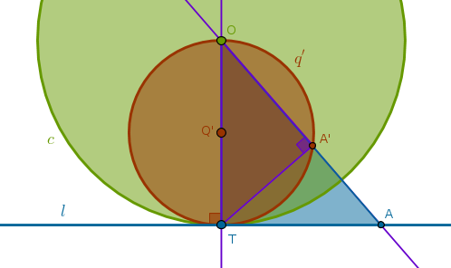

Property ICP9
Under the inversion with respect to a circle \(c(O, r)\) a straight line \(l\) passing through \(O\) is transformed into itself
If the inversion power is negative then all the points on \(l\) trade places (ICP7) while staying collinear including \(O\) that goes into \(P_{\infty}\) and \(P_{\infty}\) that goes into \(O\).
If the inversion power is positive then also all the points on \(l\) trade places except for two intersection points of \(l\) and \(c\) which stay where they are.
Property ICP10
Under the inversion with respect to a circle \(c(O, r)\) with positive power a straight line \(l\) that does not pass through \(O\) and has exactly two common points with \(c\), \(F_1\) and \(F_2\), is transformed into a circle \(q'\) passing through \(O\) and \(F_1\) and \(F_2\)
Construct a perpendicular \(p\) to \(l\) through \(O\) to locate the point of their intersection \(P\). Invert \(P\) with respect to \(c\) with positive power (ICE1). Invert an arbitrary point \(A\) on \(l\) inside \(c\) to locate \(A'\). Consider \(\triangle OPA\) and \(\triangle OA'P'\). They share a common angle at \(O\). From ICC3 we have:
$$OP \times OP' = r^2 = OA \times OA'$$ $$\frac {OP}{OA} = \frac {OA'}{OP'}$$which means that the two triangles have two sides about the equal angle in the same proportion - the essence of B6P6. Hence, they are similar and their corresponding angles, \(\angle OPA\) and \(\angle OA'P'\), are equal. But \(\triangle OPA\) is right by construction and hence \(\triangle OA'P'\) is right:
Since \(A\) was picked at random, the locus traced by \(A'\) must be a circumference of a circle with diameter \(OP'\) which can be verified by using a different point, \(B\), on \(l\) outside \(c\).
This suggests the following straight edge and compass construction:
1) Perpendicular \(p\) to \(l\) through \(O\)
2) LineSegment(\(O\), \(F_1\)) bisector \(s\) until it intersects \(p\) at \(Q'\)
3) Circle(\(Q'\), \(Q'F_1 = Q'O\)) = \(q'\):
Property ICP11
Under the inversion with respect to a circle \(c(O, r)\) with negative power a straight line \(l\) that does not pass through \(O\) and has exactly two common points with \(c\), \(F_1\) and \(F_2\), is transformed into a circle \(q'\) passing through \(O\) and \(F'_1\) and \(F'_2\) which are the points diametrically opposite to \(F_1\) and \(F_2\) correspondingly
Here we can reap the benefits afforded by ICP8 and use ICP10 to construct an image of \(l\) under the inversion with respect to \(c\) with positive power and then rotate it \(180\) degrees about \(O\).
However, it is a good exercise to construct the proof of this property from first principles yourself. We will just highlight the fact that the corresponding angles at \(O\) are not shared this time but are vertical and from B1P15 it follows that they are equal. The rest of the proof follows the one from ICP10 pretty much verbatim:
1) Perpendicular \(p\) to \(l\) through \(O\)
2) Line(\(F_1\), \(O\)) until it intersects \(c\) at \(F'_1\)
3) LineSegment(\(O\), \(F'_1\)) bisector \(s\) until it intersects \(p\) at \(Q'\)
4) Circle(\(Q'\), \(Q'O = Q'F'_1\)) = \(q'\):
Property ICP12
Under the inversion with respect to a circle \(c(O, r)\) with positive power a straight line \(l\) that has exactly one common point with \(c\) at \(T\) is transformed into a circle \(q'\) passing through \(O\) and \(T\)
Since \(T\) is on the circumference of \(c\) - it is fixed. From B3P16 it follows that an arbitrary point \(A\) on \(l\) different from \(T\) will be outside \(c\). \(A\)'s inverse \(A'\) will then be thrown inside \(c\), ICP5. By construction (ICE3) \(\angle OA'T\) is right. Hence, \(\triangle OA'T\) is right. Hence, from B3P31, in a circle the angle in the semicircle is right, it follows that the locus traced by \(A'\) must be a circumference of a circle with diameter \(OT\) since \(A\) was picked at random:
The straight edge and compass construction steps are especially easy this time:
1) Line(\(O\), \(T\))
2) LineSegment(\(O\), \(T\)) bisector \(s\) to locate \(Q'\): \(Q'O = Q'T\)
3) Circle(\(Q'\), \(Q'O = Q'T = \frac {r}{2}\)) = \(q'\):
Property ICP13
Under the inversion with respect to a circle \(c(O, r)\) with negative power a straight line \(l\) that has exactly one common point with \(c\) at \(T\) is transformed into a circle \(q'\) passing through \(O\) and \(T'\) which is a point diametrically opposite to \(T\)
Based on ICP8 we can use ICP12 to construct an image of \(l\) under the inversion with respect to \(c\) with positive power and then rotate it \(180\) degrees about \(O\). It pays, however, to construct the proof of this property from first principles yourself:
1) Line(\(T\), \(O\)) until it intersects \(c\) at \(T'\): \(OT = OT'\)
2) LineSegment(\(O\), \(T'\)) bisector \(s\) to locate \(Q'\): \(Q'O = Q'T'\)
3) Circle(\(Q'\), \(Q'O = Q'T' = \frac {r}{2}\)) = \(q'\):
Property ICP14
Under the inversion with respect to a circle \(c(O, r)\) a straight line \(l\) that has no common points with \(c\) is transformed into a circle \(q'\) passing through \(O\) having no common points with \(c\)
Verbally this property sounds the same for inversions with positive and negative powers. The only difference between them is the location of the image relative to \(l\). For an inversion with positive power \(q'\) and \(c\) are on the same side of \(O\) and for an inversion with negative power they are on the opposite sides of \(O\).
Let us prove this property for an inversion with negative power. Construct a perpendicular \(p\) to \(l\) through \(O\) to locate their intersection point \(P\). Invert \(P\) with respect to \(c\) with negative power (ICE4). Invert an arbitrary point \(A\) on \(l\) to locate \(A'\). Consider \(\triangle OPA\) and \(\triangle OA'P'\). Their angles at \(O\) are vertical and, hence, equal. From ICC3 we have:
$$OP \times OP' = r^2 = OA \times OA'$$ $$\frac {OP}{OA} = \frac {OA'}{OP'}$$which means that the two triangles have two sides about the equal angles in the same proportion - the essence of B6P6. Hence, they are similar and their corresponding angles, \(\angle OPA\) and \(\angle OA'P'\), are equal. But \(\triangle OPA\) is right by construction and hence \(\triangle OA'P'\) is right:
Since \(A\) was picked at random, the locus traced by \(A'\) must be a circumference of a circle with diameter \(OP'\).
This suggests the following straight edge and compass construction (for both powers):
1) Perpendicular \(p\) to \(l\) through \(O\) to locate their intersection at \(P\)
2) Invert \(P\) with respect to \(c\) to locate \(P'\)
3) LineSegment(\(O\), \(P'\)) bisector \(s\) until it intersects Line(\(O\), \(P\)) at \(Q'\)
4) Circle(\(Q'\), \(Q'P' = Q'O\)) = \(q'\):
\(\blacksquare\)